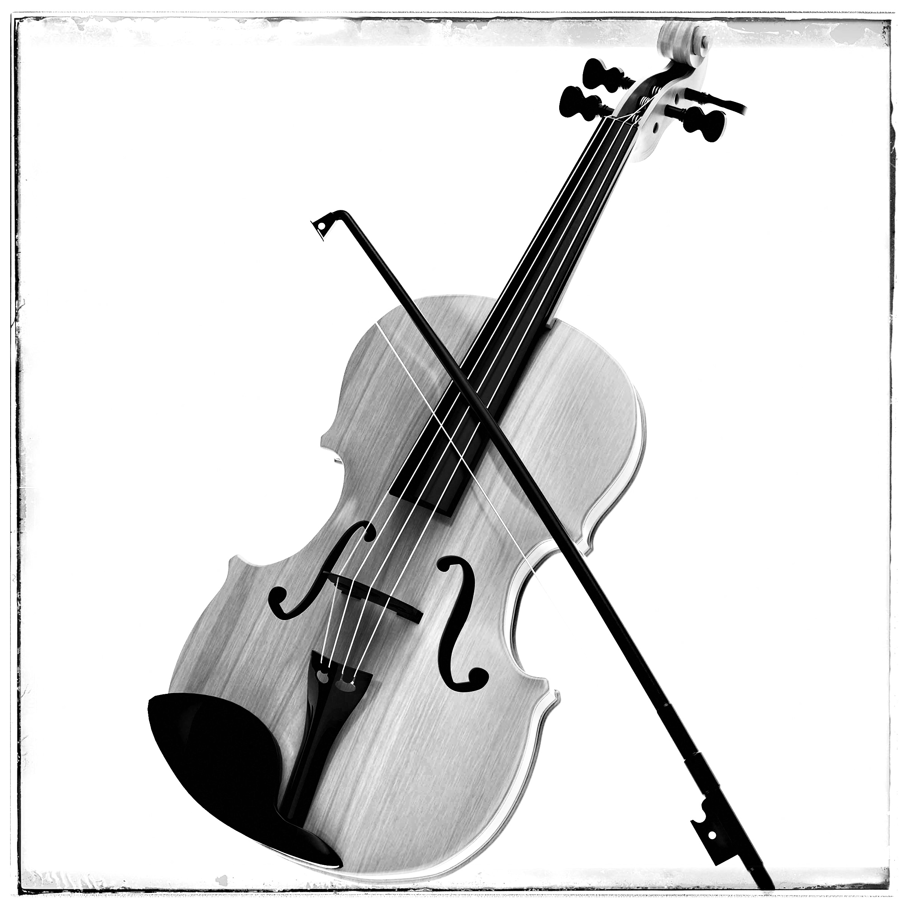
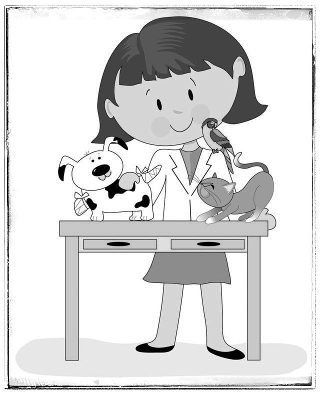

I started playing the violin when I was six years old after attending a Suzuki concert with my friends. It was love at first sight, and now I practice every day.
My favorite musical is Matilda. I recently played a supporting role in my school's production, and I can't wait to get a lead role next time!

When I grow up, I want to be a veterinarian. I love animals, and I have a dog named Griff.